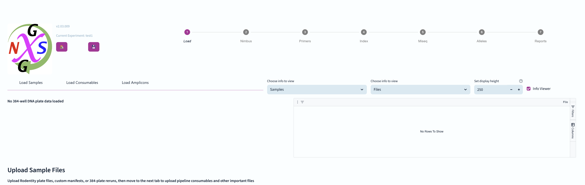
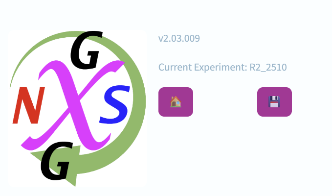
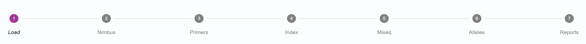
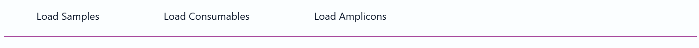
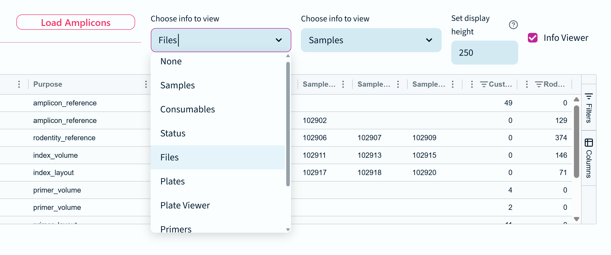
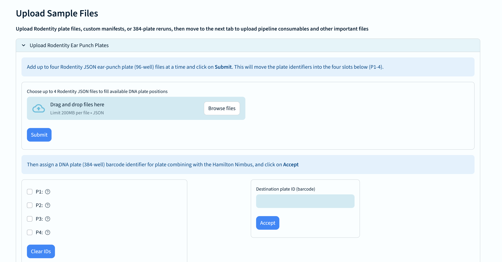
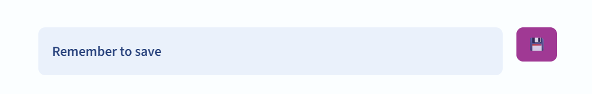

The first stage of the NGS genotyping pipeline involves loading the necessary experiment files into the system. It is the first view a user gets when they create a new experiment.

This is what a new experiment looks like when first created. Let's explain the different components.
At the top left is the logo, version number, and currently loaded experiment name.

There are also buttons for returing to the home/start screen, and for saving the current experiment.
Saving the experiment will preserve all changes made to the experiment and allow you to reopen it at a later time. If you close the browser window without saving, you will likely lose your changes.
At the top right is a pipeline widget for navigating between different stages of the pipeline. The current stage is indicated by the right-most purple number.

Below, and to the left are page tabs for different sections of the load stage.

The Load stage has three tabs: Load Samples, Load Consumables, Load Amplicons
To the right, and below the tabs, are the controls and display areas for a pair of information panels.

You can read more about the various information panels, but for now you should know that these viewers default to panels considered most appropriate for the selected stage and tab.
Appropriate panels can be used to select files and plates that have been loaded, and remove them from the experiment.
It is also possible to adjust the height of the viewer, or turn it off completely with the checkbox on the far right of the screen.
Each stage and tab has its own specific content and controls. The Load stage has three tabs, and each tab will display different file upload options

For example, here is the file upload interface to Rodentity Ear Punch Plates, specific to the Load Samples tab.
You can find out how each of these works in the appropriate stage documentation.

Don't forget to save your progress regularly! Saving will preserve all changes made to the experiment and allow you to reopen it at a later time.
If you close the browser window without saving, you will likely lose your changes. That includes any files that have been uploaded or generated using the pipeline.
The pipeline is designed to be rigorous and reliable, so if it detects files in the experiment folder with an expected name, that aren't recorded in the experiment records, it will delete them.
At the bottom of every page is another information panel displaying the activity log.

This is a crucial tool for tracking all actions taken within the experiment. It is possible to change the view from the log panel to another information panel type, and you can have a second panel visible too. By default only the log is shown here to provide sufficient horizontal screen space.
The columns in the log display are (from left to right): Time, Level, Message, Function name, Func line.
Message levels are used to indicate the severity of an issue.
To aid users in spotting important issues, warnings are displayed in yellow, errors are displayed in red, and critical messages are in purple.
You cannot remove or clear log entries.